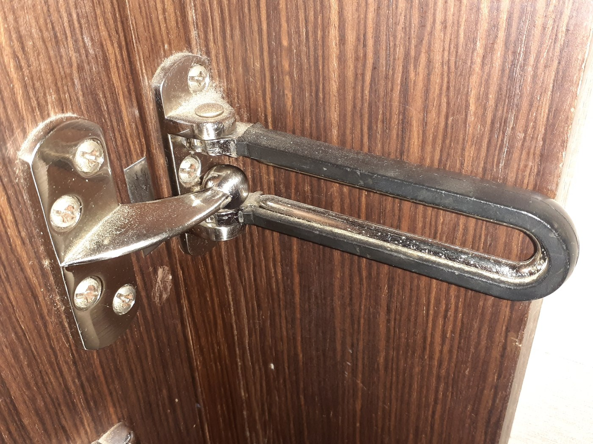
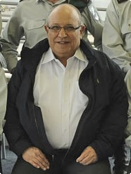
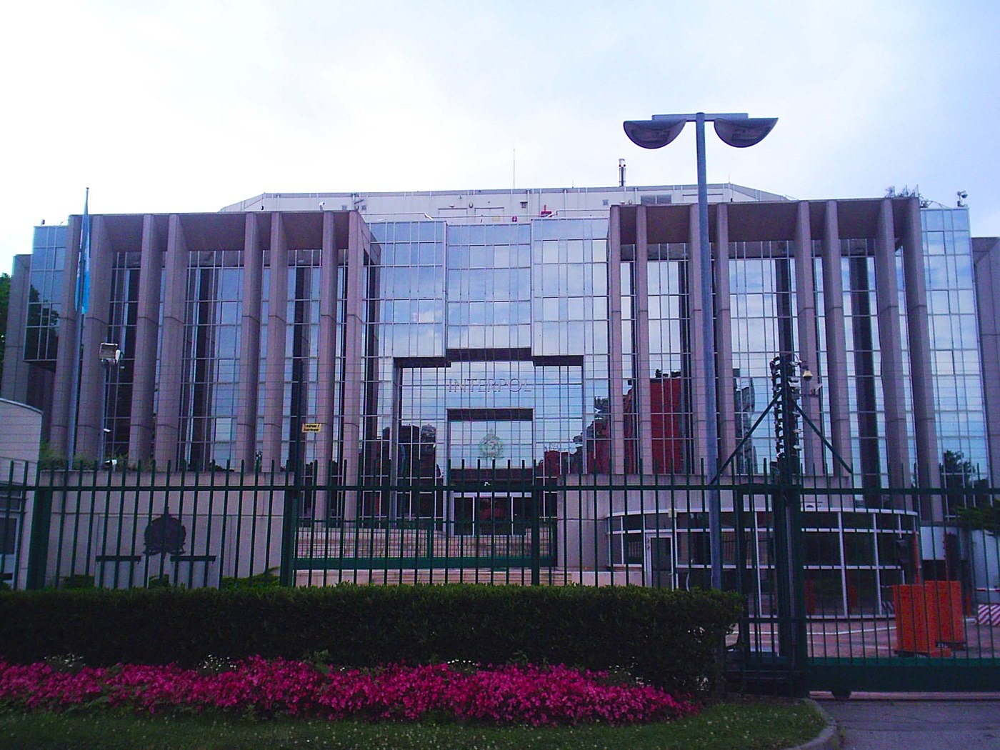
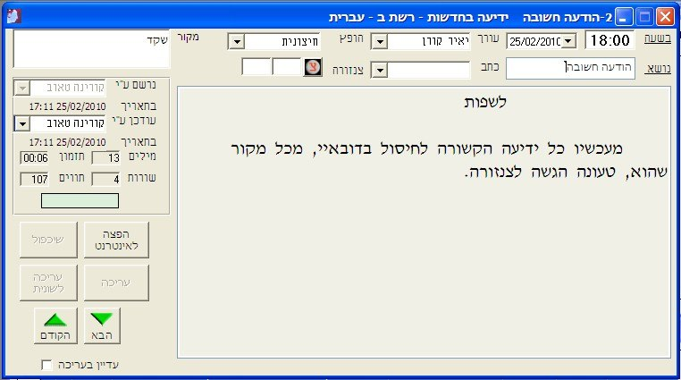

Savvy Security LLC
The Hit Worked. The Disguise Didn't.
What a 2010 hotel-room assassination in Dubai taught the world about the surveillance you now live inside.
At 8:24 on the evening of 19 January 2010, a 50-year-old man walked into Room 230 of the Al Bustan Rotana hotel in Dubai. Twenty minutes later he was dead, arranged in the bed as though asleep. The team that killed him was never caught — sixteen years and seven months later, not one person has served a day for it. And yet this operation is taught as a catastrophe, not a success, because of what a municipal police force did to it in the following thirty days with nothing more exotic than hotel records and a spreadsheet. This is the closest thing our field has to a founding document for what the FBI now calls Ubiquitous Technical Surveillance. Here it is, in full, with the parts security people actually care about left in.
One note before we start. This is a technical autopsy, not a verdict. Mahmoud al-Mabhouh was a founder of Hamas's military wing, wanted by Israel over the 1989 kidnapping and killing of two soldiers, and reportedly involved in moving Iranian weapons into Gaza. Dubai Police concluded the Israeli Mossad was responsible; Israel has never confirmed or denied it. You will have views on the politics. I'm not going to tell you what to think about them, and I've attributed every contested claim to whoever actually made it. What I'm interested in is the tradecraft, because the tradecraft applies to you whether you agree with the mission or not — and because, as you'll see in Part Nine, the specific capability that broke this operation has since migrated from national intelligence services to cartels, extortion crews, and anyone willing to pay a data broker.
I. He was already lost before he landed
Here is the part most retellings skip, and it's the part that matters most.
Al-Mabhouh did not lose in that hotel room. He lost over the preceding year.
According to Ronen Bergman's reporting in Rise and Kill First, a surveillance element had been working him for roughly twelve months — mapping his pattern of life, and reaching into his machines. A Trojan on his computer. Access to his email server. This was his fifth trip to Dubai in under a year, and he had survived at least two earlier attempts on his life: a car bombing, and a poisoning in Beirut in 2009 that reportedly left him unconscious for around thirty hours. He knew he was hunted. He normally travelled in disguise, sometimes with coloured contact lenses, and kept a deliberately low profile.
On this trip he did none of that. A Hamas legislator, Salah Bardawil, said publicly afterwards that al-Mabhouh had discussed the trip by phone, booked his hotel over the internet, and told family in Gaza where he'd be staying. He flew under his own arrangements with no protective detail. Hamas said his bodyguards couldn't get seats on the same flight and were due to follow the next day. Whether that was coincidence or arrangement has never been established.
So when he booked Emirates flight EK912, Damascus to Dubai, a collection operation that had been running for a year converted into an actionable window measured in hours.
Sit with that sequence. The endpoint compromise came first. The mail server came second. The physical operation came last, and it was only possible because the digital work had already been done. The team didn't need to guess where he'd be. They read it.
This is the pattern in nearly every targeted intrusion I've ever looked at, and the shape of it hasn't changed in sixteen years. Long, quiet, patient collection. Then a window opens, and everything happens in a day.
There was a second problem, and it belonged entirely to the team. There had been no time to build fresh identity documents for this window. They had already entered Dubai three times in the preceding six months on a set of European and Australian passports, and would have to use those same documents again. Bergman reports that the Mossad director, Meir Dagan, approved the operation anyway and dictated the go-order to an assistant himself:
That decision is the hinge of the entire operation. Everything that follows was, technically, extremely competent. That one choice was not survivable.
Dubai's police chief, Lt. Gen. Dahi Khalfan Tamim, was blunt about the target's own half of it: if al-Mabhouh had brought even one person with him, the operation would have failed. He also noted that the man had leaked enough information for the team to work with.
He was a hard target who had one soft week.
II. Pre-positioning
The team came in staggered pairs through the small hours of 19 January.
Two operatives cleared Dubai International shortly after midnight, travelling as Michael Bodenheimer (a German passport — the only genuinely issued document in the entire set) and James Leonard Clarke (British). Two more landed roughly twenty minutes behind them off a Paris flight, on Irish passports, in the names Gail Folliard and Kevin Daveron. Within the hour, all four had checked into two different hotels — Dubai Police later assessed these as advance surveillance pairs. At 2:29 a.m. a fifth man arrived on a French passport as Peter Elvinger, met a colleague at the airport, and ten minutes later the two walked out of the terminal in different directions and checked into separate hotels. Elvinger is generally assessed as the on-scene coordinator.
Through all of this, no operative ever telephoned another operative. Not once. Instead, Dubai traced a heavy volume of calls and texts between three handsets on the ground and four numbers in Austria, assessed as the command node. On-the-ground coordination used short-range personal comms devices. The traffic appears to have been coded. No content is known to have been recovered.
This is a genuinely sophisticated communications design, and I want to give the team full credit before I take it away. As interception defence, it is close to perfect. Nobody ever heard a word.
As correlation defence, it's a disaster. By routing every link through one foreign hub, they turned a flat set of unconnected strangers into a star topology with an identifiable centre. Get one node and the hub gives you the rest. Dubai already had a handful of handsets belonging to guests they'd flagged on camera. The Austrian numbers handed them everyone else.
They secured what was said and broadcast who was a team. Sixteen years on, that trade is still the most common mistake I see. People encrypt the message and leave the graph in the open. The graph is usually the thing worth having.
Later that morning, three of the named suspects arrived separately at a shopping centre and left within the hour, Folliard carrying several bags. Around midday, Elvinger and Folliard checked out of their hotels, and the first surveillance pair took up position in the lobby of the Al Bustan Rotana.
III. Acquisition, and the smartest move in the operation
Al-Mabhouh's flight left Damascus at 10:05 a.m. He cleared immigration in Dubai between 3:15 and 3:20 p.m. He was photographed by airport cameras and iris-scanned on entry, which was routine — and which, nobody noticed at the time, also applied to everyone who'd come in ahead of him.
He was tailed from the airport, took a taxi to the Al Bustan Rotana, and checked into Room 230 at about 3:25. He'd asked for a room with no balcony and sealed windows so the door would be the only way in. That was a sound precaution against the threat he was expecting.
Two operatives dressed as tennis players rode the elevator up with him. Their job was to confirm his room number and clock the room across the hall. They managed both. Their tradecraft is also the most criticised thing in the entire video: they'd been loitering in the lobby with towels over their shoulders, they were carrying rackets with no cases, and on camera they visibly hesitate and confer as he steps out of the lift while the hotel employee escorting him glances back at them. Tamim later asked where you find a real tennis player walking around with an uncased racket. It's a fair question.
At 3:51 p.m., Elvinger arrived at the hotel, visited the business centre, and booked Room 237 — directly across the corridor from 230 — by specific room number. He never went up to it. He passed the key card to Daveron in the lobby and flew out of Dubai within hours.
Room 237 is the smartest move in the operation and the record that destroyed it. It gave the team a legitimate reason to be on that floor, a staging room, line of sight to the target's door, and a real credentialled key. It also created an anomaly that no wig on earth could erase: a guest who reserves one specific room by number, pays for it, never sleeps in it, and leaves the country the same day is a permanent entry in a property management system.
Al-Mabhouh went out at 4:23 p.m. and was gone about four hours. Tamim later said he met no one in the emirate and went shopping; other accounts have him meeting Palestinians from Gaza. He bought a pair of shoes.
While he was out, the team worked. Daveron and Folliard went up to 237 about fifteen minutes after he left. Surveillance pairs rotated through the lobby without lingering. People switched hotels. Appearances changed — Daveron, who is bald, put on a dark wig and glasses to pass as hotel staff; Folliard took off a blonde wig to reveal dark hair. At another hotel, cameras caught a man and a woman going into bathrooms and coming out looking like different people. Everything was paid in cash or on prepaid cards. Around 6:30 p.m., four more operatives arrived and went straight up to 237 without stopping in the lobby, and using equipment brought into the country began working on duplicating the card key and code for Room 230.
IV. Entry, and what we still don't know about it
How they got into Room 230 is still not known. No camera covered his door. What exists is a machine record: the hotel's lock system logged an attempt to reprogram the electronic lock on 230 at around 8 p.m. Earlier that evening, the same door's audit trail shows an access at 7:00 under a housekeeping credential and another at 7:05 under a laundry credential — two service entries five minutes apart, hours after the guest had left. That reading comes from analysts working off the printout Dubai released rather than an official statement, and should be treated accordingly — but it is difficult to explain innocently.
Dubai's position is that the team entered around 8 p.m., after housekeeping finished the floor, using an electronic device, and waited inside in the dark. Other accounts say they cloned the card from 237, that they used copies of keys acquired by unspecified means, or that a guest stepping off the elevator interrupted them and they had to get al-Mabhouh to open the door himself. Around 8:20, a lookout on the second floor was filmed stalling a tourist who came off the lift, apparently to buy the team time.
These versions don't reconcile. Anyone who tells you definitively how that door opened is guessing.
He came back at 8:24.
V. Twenty minutes
Dubai Police's forensic conclusion, announced by Maj. Gen. Khamis Mattar al-Mazeina on 1 March, was that al-Mabhouh was injected in the leg with succinylcholine — a fast-acting paralytic that shuts down motor function without producing unconsciousness or anaesthesia — and then suffocated. Roughly seven people are believed to have been in the room. Al-Mazeina was explicit that the method was chosen so the death would look natural.
The staging followed. Body in the bed, arranged as though asleep. Clothes changed — investigators later noticed the shirt he wore on arrival was missing from his effects, and thought it had been taken because it was torn in a struggle. Signs of a struggle removed. A bottle of his blood-pressure pills left out on the bedside drawer.

The team started leaving at 8:46. Four large men on the corridor camera, two of them chatting while they waited for the elevator. On the way out, the safety chain was set from the inside and a "Do Not Disturb" sign hung on the door handle — both deliberate, to support a natural-death reading and delay discovery. At about 8:52, his wife called and got no answer. At 8:52, the last pair walked out of the hotel — Tamim later called that moment the end of the operation.
They went to the airport in separate groups and scattered — Zurich, Frankfurt, Düsseldorf, Rome, Milan, Paris, Amsterdam, Hong Kong, Bangkok, Doha, Johannesburg, per the route diagram Dubai released. Two suspects reportedly travelled to Iran, two more reportedly to the United States.
By the time anyone in Dubai suspected a crime, they were on five continents.
Judged purely as an operation, this is close to flawless. The target is dead. No operative is caught. The death is not even classified as a crime for ten days. Total exposure inside the hotel is measured in minutes — one Dubai Police release notes the execution element was present for twenty-two of them.
The failure was not tactical. It was archival.
VI. Thirty days
And then a municipal police force took the whole thing apart.
Not with signals intelligence. Not with a source inside anything. With records.
Investigators pulled 648 hours of CCTV from the hotel, a shopping mall and the airport. Then they did the thing that actually cracked it: they built a list of everyone who entered and left Dubai around each of al-Mabhouh's trips in 2009 and 2010, and looked for repeats.
The same set of British, Irish, Australian, French and German "nationals" came up across multiple trips — because the team had used the same passports on earlier reconnaissance runs into the same city. Bergman reports they'd been in three times in the previous six months. Cross-reference those names against the Al Bustan guest list and you have your staging room, your coordinator, and your surveillance pairs. From there it cascaded. Three failure modes did the real damage.
Failure one: the payment instruments
Somewhere between fourteen and seventeen suspects used prepaid MasterCards to buy tickets and cover hotels. The cards were issued by Payoneer, through MetaBank of Storm Lake, Iowa. Other cards in the set traced back to a UK building society, a Gibraltar finance company and a German bank.
Here's the problem. A prepaid card is anonymous to a merchant. It is extremely non-anonymous to an analyst, because the first six digits identify the issuing programme. Those Payoneer cards weren't common in Dubai. They didn't blend in. They clustered — which is worse than standing out alone, because a cluster is a group, and a group is a network. Once you have the BIN range you can ask for every transaction on it in the emirate that week, and the answer is a guest list.
Investigators also noted, and it did not help, that Payoneer's founder was a former IDF special forces officer with R&D in Tel Aviv. He denied any connection.
Failure two: the communications topology
Covered above — and it bears repeating as its own failure category, because it is the one this audience is most likely to reproduce. Perfect content security. Zero metadata security. They secured what was said and broadcast who was a team.
Failure three: the documents
Reusing passports across four trips into the same city is what converted a set of one-time-use identities into a persistent, queryable pattern.
This is the one Dagan later owned personally. In an interview for Bergman's book, the former Mossad chief said he had been wrong to send the team in with those passports, that it was his decision alone, and that he bore full responsibility for what happened.

I don't know of another on-the-record admission of an operational security failure at director level anywhere in the literature. If you ever need to explain to an executive that opsec decisions are leadership decisions and not technician decisions, that's your example.
VII. The lock
There's a footnote here that turned into a real security story, and this audience will appreciate it.
The locks on those doors were VingCard Locklink units. They could be interrogated and reprogrammed directly at the door — a deliberate design choice made for maintenance convenience. That choice had two consequences: it gave the team a plausible attack path, and it generated the log that documented the attempt.
Fast forward to April 2018. Researchers Tomi Tuominen and Timo Hirvonen at F-Secure disclosed a design flaw in VingCard's Vision software — deployed in more than 40,000 buildings across 166 countries — that let them forge a working master key from any expired or discarded keycard for that property. Any old card in a bin. About a minute of work.
They said the 2010 assassination was what set them looking.
Eight years between an operational use of a hotel lock weakness and its public disclosure. Think about what that gap means for anything in your environment that was designed for maintenance convenience before it was designed for security. The gap isn't unusual. It's normal.
It's also worth noting how the security community itself processed this case in real time. Within days of the Dubai Police video release, Bruce Schneier's blog carried a widely commented post on the assassination, and its comment thread — including a detailed reading of the released Locklink audit printout — is itself a small primary artefact of professional open-source analysis happening live. Toool, the Dutch lockpicking collective, published its own contemporaneous "Blackbag" writeup on hotel door security within the month. This case was being worked by outside analysts before Dubai had even finished naming suspects.
VIII. What actually happened to anyone
Very little, and this is worth being precise about because the internet usually gets it wrong.
Interpol issued 27 Red Notices — eleven on 18 February 2010 and sixteen more on 8 March. Interpol took the unusual step of publishing the photographs while stating openly that the names were aliases belonging to real and probably innocent people whose identities had been stolen. Secretary General Ronald Noble credited Dubai's investigation with establishing links through passport records, video surveillance, DNA analysis, witness interviews, and hotel, credit card, phone and transport records. Dubai agreed to load all of it, including crime-scene DNA profiles, into Interpol's databases.

Diplomatically, it cost something real. The UK, Australia and Ireland each expelled an Israeli diplomat. France summoned the chargé d'affaires. Britain's Serious Organised Crime Agency concluded there was compelling evidence Israel was responsible for the misuse of British passports, and the Foreign Office advised UK passport holders in Israel to hand over their documents to third parties only when absolutely necessary. Ireland called Israeli responsibility for the forged Irish passports an inescapable conclusion. Australia said there was no doubt four of its passports had been forged.
According to Le Monde, citing senior French intelligence officials, the operation was in fact run from a command post in a hotel in the Bercy district of Paris — and France, on learning this, suspended intelligence sharing with Israel.
Legally? One arrest. Uri Brodsky, also known as Alexander Verin, was detained at Warsaw airport in June 2010 on a German warrant over the German passport in the "Michael Bodenheimer" name — the same identity named in Part Two, and the only genuinely issued document in the set, obtained with an Israeli passport and a fictitious address, which is how the thread got pulled. Poland extradited him in August 2010, but only on condition he face the lesser charge of fraudulently obtaining documents rather than espionage. Germany released him on €100,000 bail within a day. He flew to Tel Aviv. At the end of 2010 the document-fraud case was suspended in exchange for a €60,000 fine. A German espionage warrant reportedly remains open.
That's the ledger. Twenty-seven Red Notices, three expelled diplomats, one fine, zero days served, zero prosecutions for the killing itself. No suspect's true identity has ever been publicly established.

WikiLeaks cables later showed the UAE spent nine days at the highest levels debating whether to say nothing or publish everything, and concluded silence would look like protecting the Israelis. They'd also asked the United States for help tracing the credit card numbers. The US didn't cooperate.
IX. Why this is your problem now
In June 2025 the Department of Justice Inspector General published an audit of the FBI's efforts to protect sensitive operations from technological compromise. The subject was Ubiquitous Technical Surveillance — which the FBI defines, roughly, as the widespread collection of data and use of analytic methods to connect people to things, events and locations.
The audit's own case study is worth a moment: during the 2018 "El Chapo" investigation, a Mexican criminal organisation hired a hacker who used an FBI legal attaché's phone number to pull geolocation and call data, then got into Mexico City's camera system to watch the attaché and map his contacts. The cartel used that to intimidate and, in some cases, kill potential sources.
A cartel did that. Not a state.
In November 2025 the Center for Internet Security, working with the Major County Sheriffs of America and the Association of Law Enforcement Intelligence Units, built a law-enforcement playbook on the same framework. That report notes the CIA has described the UTS threat as existential.
The DOJ framework sorts UTS data into five categories. Look at what happens when you lay January 2010 against them.
| UTS category | Dubai, 19 January 2010 |
|---|---|
| Travel — flights, hotels, border crossings | 56 flights, 13 transit cities, 17 countries, plus the Room 237 booking and passports reused across four trips into one city |
| Visual and physical — cameras, surveillance infrastructure | 648 hours of hotel, mall and airport CCTV, cut into a 27-minute film broadcast worldwide |
| Online — browsing, accounts, activity | The target booked his own travel online and had his mail server compromised. Both sides lost here |
| Electronic signals — phones, smart devices | Three handsets, four Austrian numbers, a star topology, and coded content nobody ever needed to read |
| Financial — transactions, account identifiers | Prepaid cards across four institutions in four jurisdictions, clustering instead of blending |
All five. In one operation. In one day. In 2010.
That is why this case matters. Dubai 2010 is the first time every category of what we now call ubiquitous technical surveillance was correlated against a single clandestine operation, and the operation was fully reconstructed — faces, aliases, routes, payments, network topology — inside thirty days, by a city police department.
At the time that was a startling municipal achievement. Today it's the floor. The capability that embarrassed a national intelligence service in 2010 is now available to organised crime, to extortion crews, to stalkers, and to anyone willing to pay a data broker. The techniques haven't changed. The barrier to entry collapsed.
Five things to take from this
1. Optimise against reconstruction, not detection. The Dubai team was never detected in real time. Not once. They were reconstructed afterward from records that existed the whole time and interfered with nothing. Ask what your activity looks like assembled six months later by someone motivated, not what it looks like right now to someone bored.
2. Metadata beats content. They achieved perfect content security and lost anyway. Encrypting the message while leaving the graph exposed is the most common serious mistake in this field, and it was already the fatal one in 2010.
3. Reuse is the whole ballgame. One passport used once is an identity. The same passport used four times into the same city is a pattern, and patterns are queryable. Same for device IDs, same for handles, same for card numbers, same for the "anonymous" account you've now logged into from your home IP twice.
4. "Anonymous to a merchant" is not "anonymous." Prepaid cards, burner SIMs and gift cards feel private at point of sale and are highly legible in bulk. Anything issued in a batch identifies the batch.
5. Convenience features generate forensic evidence. The lock could be reprogrammed at the door, which helped the attackers — and logged them. Every maintenance backdoor, debug interface and admin convenience in your environment is doing both jobs at once.
X. What we still don't know
I'd be doing you a disservice if I presented this as settled. It isn't, and the gaps are instructive in their own right.
Cause of death is contested. Dubai's final position is succinylcholine and suffocation. Al-Mabhouh's family cited a French laboratory finding electrocution; his brother described an electrical device held to the head, followed by strangulation. Bergman reports a device that used ultrasound to inject medication without breaking the skin, which sits awkwardly with the reported puncture marks. These accounts do not fit together.
Entry method is unknown. Four incompatible versions, and no camera on the door.
The target's travel identity is disputed. Several outlets reported al-Mabhouh travelled under the alias "Mahmoud Abdul Rauf Mohammed"; Hamas and Dubai officials maintain he entered under his own name. Edward Jay Epstein notes he reportedly carried five passports of his own — worth remembering before anyone treats "travelling on a false identity" as proof of which side a person was on.
Team size drifts across the reporting from 11 to 18 to 26 to 27 to 29. Tamim explicitly refused to rule out more.
Even the CCTV count isn't fixed. Reputable sourcing gives both 645 and 648 hours. A figure of 27,000 hours circulates on at least one AI-generated reference site and should be treated as an outright error — a good, small reminder to verify a number against a primary source before you repeat it, especially when the source doing the repeating is a machine.
A vehicle-tracker claim doesn't reconcile with the rest of the record. One Gulf News report states the team planted a tracker in a rented Toyota Land Cruiser and tailed al-Mabhouh to the hotel from there; most accounts have him simply taking a taxi from the airport. This is unreconciled, and may be a conflation with an earlier trip.
And there is a real dissenting reading. Edward Jay Epstein argued in The New Republic that the footage establishes identity fraud, not murder, and that twenty-six people travelling on false identities through Dubai doesn't prove they were all on the same business or the same side. I don't find that persuasive as a whole, but the narrow point is sound: the video shows people moving through a hotel. The attribution rests on Dubai Police's analysis, and Israel has never confirmed or denied.
The most widely reproduced English rendering of the Dubai Police "minute-by-minute" timeline contains its own AM/PM transcription errors and a wrong date header over the afternoon block — a small, concrete demonstration of how a reconstruction degrades as it gets copied from source to source.
If a case this heavily documented — 648 hours of video, 27 international notices, sixteen years of reporting, a memoir admission from the man who authorised it — still has an unknown entry method and four theories of cause of death, be humble about the incidents you're reconstructing with a fraction of that evidence.
XI. The uncomfortable part
Here's where I'll leave it.
By its own terms, the operation succeeded. The target was killed. Nobody was caught. Nobody has been punished. If you measure operations by whether they achieve their objective and protect their people, this one worked.
And it still ended an era.
Twenty-something operators were burned permanently — faces published worldwide, iris scans on file in a country that now had reason to keep them, aliases dead, movement across half the planet foreclosed. Three friendly nations expelled diplomats. A relationship with France reportedly went cold. The Mossad director stepped away later that year and eventually put his own name to the mistake.
Meanwhile the man who was targeted was defeated a year earlier, by a Trojan and an email server, before anyone ever booked a flight.
That's the whole lesson, and it's why I keep coming back to this case. The dramatic part happened in twenty minutes in a hotel room. The decisive parts happened somewhere quiet, months in advance, in records nobody was thinking about.
Sources
Primary documents
- Interpol press release, Red Notices for 11 Dubai murder suspects, 18 February 2010, and statement on 16 additional Red Notices, 8 March 2010 (total 27) — interpol.int
- Philip Alston, Report of the Special Rapporteur on extrajudicial, summary or arbitrary executions — Addendum: Study on Targeted Killings, UN Doc. A/HRC/14/24/Add.6, 28 May 2010, para. 7 — lists this case among five illustrative modern examples, the only one carried out by an on-the-ground human team rather than a drone, missile or military unit
- Dubai Police press statement, 25 February 2010 (published in full by the Financial Times), and the 27-minute CCTV composite released February 2010
- US diplomatic cable from Ambassador Richard Olson, released via WikiLeaks, December 2010
- DOJ Office of the Inspector General, audit of FBI efforts to mitigate Ubiquitous Technical Surveillance, report 25-065, June 2025
- Center for Internet Security / Major County Sheriffs of America / Association of Law Enforcement Intelligence Units, Countering Ubiquitous Technical Surveillance: Facts, Findings, and Recommendations for U.S. Law Enforcement, November 2025
Books and long-form
- Ronen Bergman, Rise and Kill First: The Secret History of Israel's Targeted Assassinations. Random House, 2018 — Dagan's admission; Operation Plasma Screen
- Ronen Bergman, GQ, January 2011 — play-by-play of the operation
- Dan Magen, Israeli Mossad – The True Story, 2017 — the Bodenheimer/Brodsky thread
- Uzi Mahnaimi, The Sunday Times, 31 January and 21 February 2010
- Edward Jay Epstein, The New Republic — the sceptical minority reading
- Christoph Schult and Holger Stark, Der Spiegel, 22 February 2010 and 15 January 2011; Le Monde on the Bercy command post and France's suspension of intelligence sharing
Security-community sources
- Bruce Schneier, "Al-Mabhouh Assassination," 19 February 2010 — with its comment thread, a primary artefact of how the security community processed the case in real time, including the reading of the Locklink audit printout
- F-Secure / Tomi Tuominen and Timo Hirvonen, VingCard Vision master-key disclosure, April 2018
- Toool Blackbag, "Assassination and hotel door security," February 2010
Contemporaneous reporting
Gulf News, The National (Abu Dhabi), Khaleej Times, Newsweek, CNN, BBC, The Times, The Guardian, The Telegraph, Haaretz, Ynetnews, Al Jazeera, The Irish Times, Sydney Morning Herald, Wall Street Journal, Reuters, AFP, Der Spiegel.
Where sources conflict, the conflict is noted rather than resolved — see Part X. Photographs: the Al Bustan Rotana room and the Dubai skyline are period-accurate, freely licensed photographs of the hotel and city, not documentation of the crime scene itself; captions say so explicitly where relevant. This article deliberately does not reproduce the Interpol Red Notice photographs — Interpol itself stated publicly that those images depict real, likely innocent people whose identities were stolen for the operation, and republishing them captioned as "suspects" would repeat the same harm.
Malcolm R. Smith writes on operational security, surveillance and digital forensics for Savvy Security LLC.